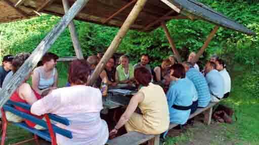
Seit 1990 veranstaltet der Südthüringer Literaturverein jährlich Werkstatttage – zunächst meist am Wochenende nach Himmelfahrt. In zunächst zwei Seminargruppen (Prosa und Lyrik), seit 2007 in drei Seminargruppen (zuzüglich einer Jugendgruppe) werden jüngst entstandene Texte diskutiert und lektoriert sowie Schreibaufgaben gestellt und kreatives Schreiben geübt. Vorträge ergänzen das Programm – etwa zu Auftrittsverhalten, literarischen Genres und Literaturgeschichte. Vielfach ergänzt eine Gastlesung das Werkstattprogramm. Bei schönem Wetter finden die Debatten auch im Freien statt.
Über all diese Jahre hinweg stellten die Teilnehmer in einer öffentlichen Lesung am Samstagabend im Literaturmuseum Baumbachhaus Meiningen die besten frisch entstandenen Werkstatttexte vor – dabei wirkten sie mit jungen Meininger Musikern zusammen.
Veranstaltungsorte im Laufe der Jahre
Langjähriger Stammsitz der Werkstatttage in der Nähe von Meiningen.
Nach Schließung der Bildungsstätte Untermaßfeld neuer Ausweichort.
Das Jugendausbildungszentrum im Schloss Sinnershausen in der Rhön wurde für sechs Jahre zum festen Werkstatt-Domizil. 2020 musste der Trägerverein infolge der Corona-Pandemie den Betrieb einstellen – die Literaturwerkstatt 2020 fand erstmals digital statt.
Drei Jahre lang bot das Hotel in der Rhön den Werkstatttagen ein neues Zuhause.
Nach dem Umbau des Rhön-Feeling zum Familienhotel und dem Wegfall der Seminarräume wurde das Hotel Zum Kloster in Rohr neuer Veranstaltungsort. Der Start zum 35. Werkstatt-Jubiläum 2024 war vielversprechend.
Werkstatt-Jahrgänge
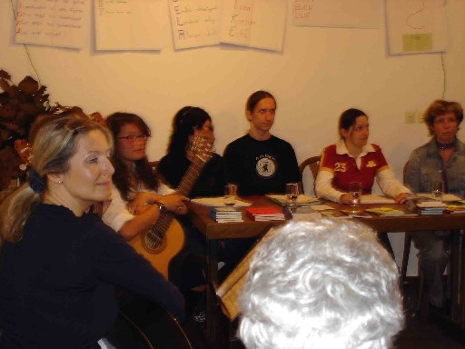
Jahrgänge im Detail
„Irrwege"
.JPG)
.jpg)
„Glatteis"
„Bücher(R)egal" (35-Jahrfeier)
.jpg)
.jpg)
„Nach Süden"
„Auf der Kippe"
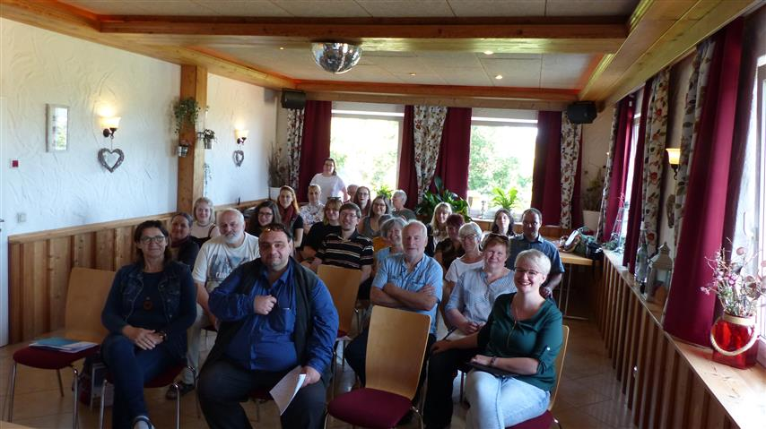
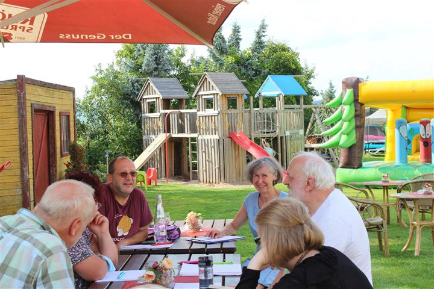
„Im Nebel"
Erstmals digital – corona-bedingt
„Schere – Stein – Papier" (Jubiläum)
„Elfen"
„Hurra, 17!"
.jpg)
„Flüchtig"
„Reif"
„HinterSinn"
„Grenzerfahrung(en)"
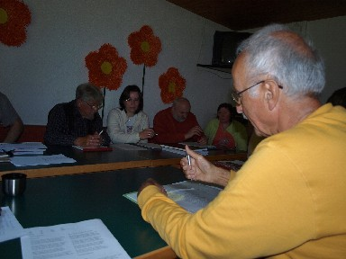
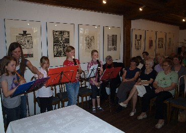
„NebenWelten"
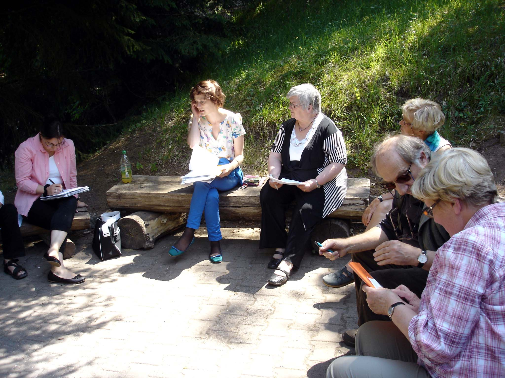
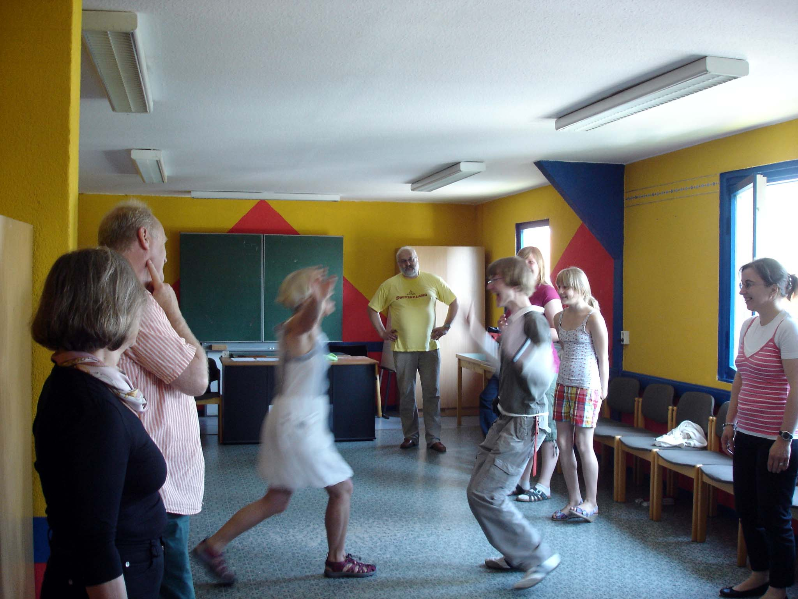
„Orts(un)kundig"
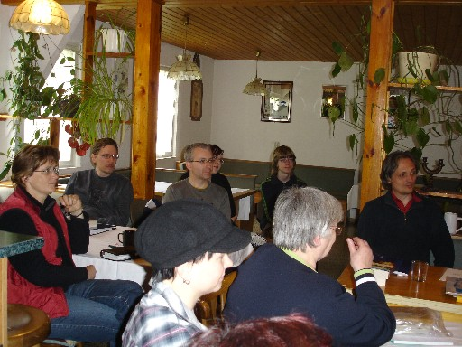
„Das Eigene und das Fremde"
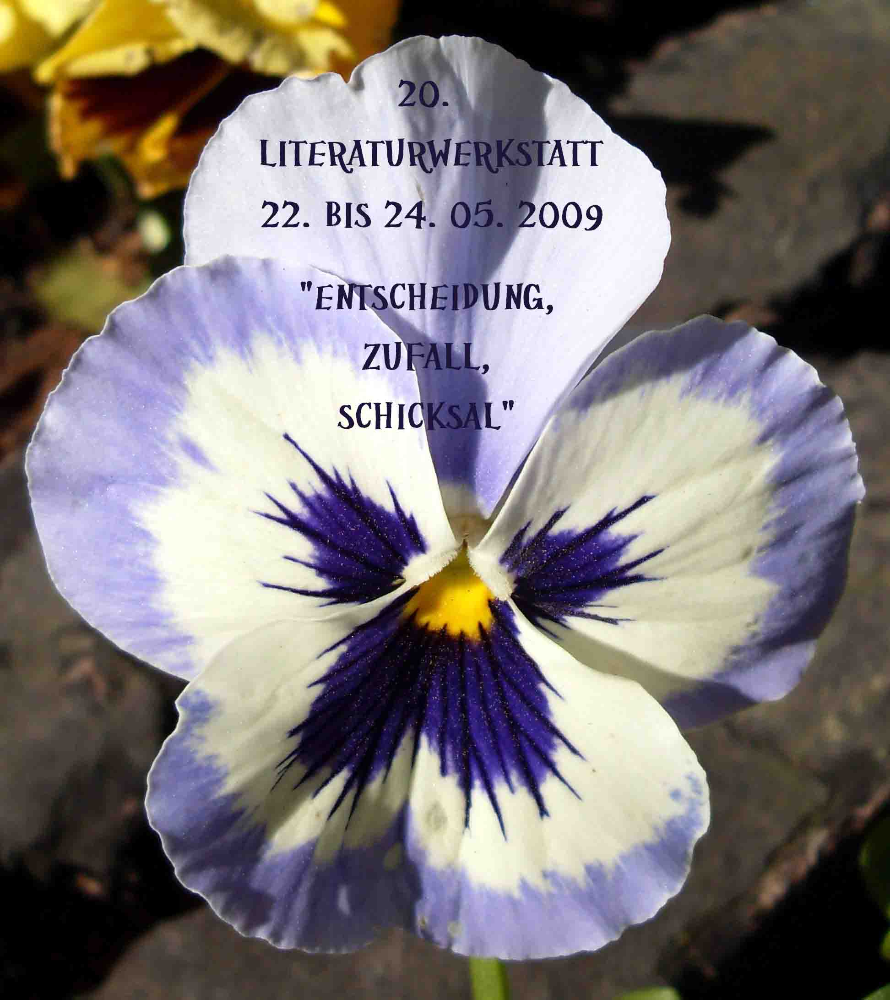
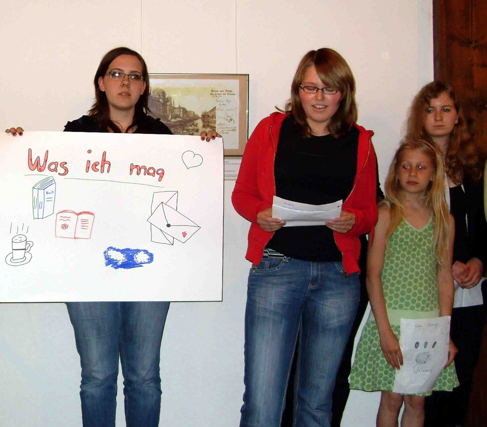
„Entscheidung – Zufall – Schicksal"
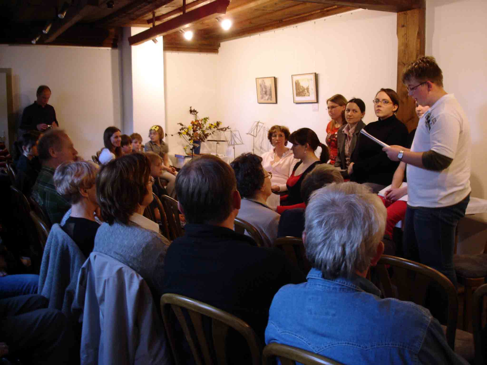
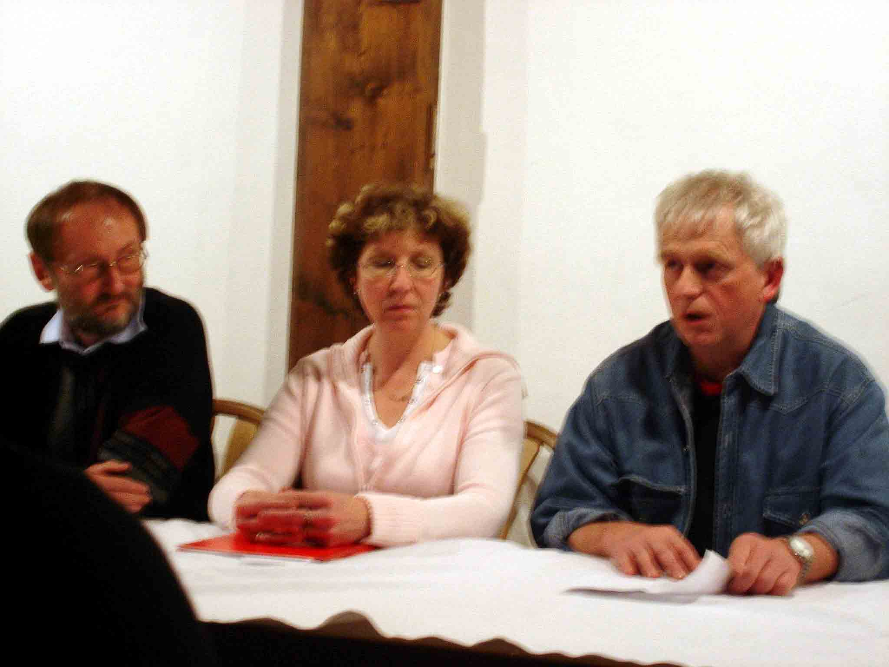
„Menschen – Paare – Zwiegespräche"
→ Aktuelle Werkstatttage: Termine & Ankündigungen